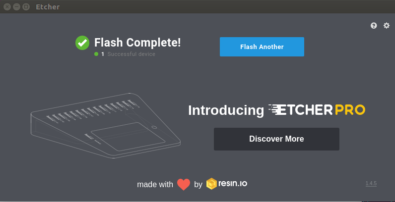
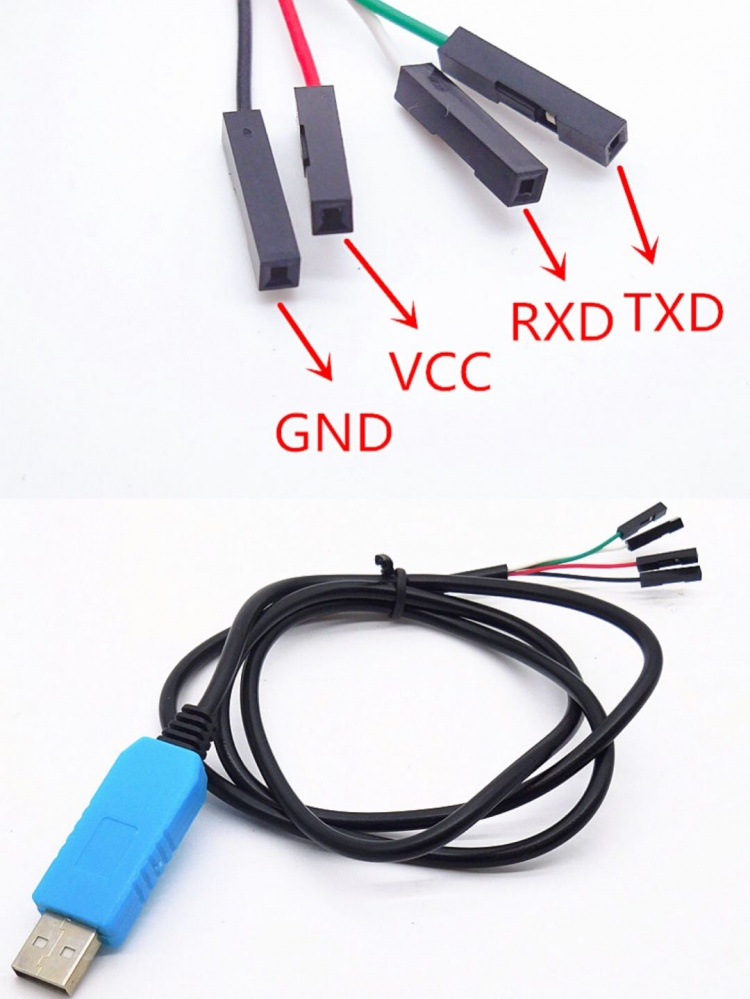

Introduction
Everything big starts small, and this is the first page of our documentation.
ROCK 3
ROCK3 is a series of Rockchip RK3566/RK3568 based SBC(Single Board Computer) and Compute Module by Radxa. It can run android or some Linux distributions.
ROCK3 series features a quad core Cortex-A55 ARM processor, 32bit 3200Mb/s LPDDR4, up to 4K@60 HDMI, MIPI DSI, MIPI CSI, 3.5mm jack with mic, USB Port, GbE LAN, PCIe 3.0, PCIe 2.0, 40-pin color expansion header, RTC. Also, ROCK3 supports USB PD and QC powering.
Getting Started with ROCK 3A
This guide is designed for ROCK 3A enthusiast. The purpose is to learn about ROCK 3A as well as how to prepare and set up for basic use. When you get a board, you need to know what model it is and which hardware version it is. The information is printed in the top side of the board. We will introduce the board information as much as possible.
What you need
Necessary
-
ROCK 3A main board
-
One of the Storage media below:
- microSD, larger than 8GB
- eMMC module, larger than 8GB
-
Power supply
- The ROCK 3 is powered by Type-C port and has a wide range of input voltage, from 9V to 21V. ROCK 3 supports USB Type-C PD 2.0 with 9V/2A, 12V/2A, 15V/2A and 20V/2A. Besides, the Pi supports QC 3.0/2.0 with 9V/2A and 12V/1.5A.
- The Type-C cable you using needs to support data communication. We call it USB Type-C charging data cable.
-
USB Keyboard and Mouse
- With four USB-A connectors, ROCK 3 can be equipped with a full sized keyboard and mouse.
-
Monitor and HDMI Cable
- ROCK 3 is equipped with a full sized HDMI connector. HDMI capable monitor is recommended.
- HDMI EDID display data is used to determine the best display resolution. On monitors and TVs that support 1080p (or 4K) this resolution will be selected. If 1080p is not supported the next available resolution reported by EDID will be used. This selected mode will work with MOST but not all monitors/TVs.
-
USB to TTL serial cable
- ROCK 3 exports a dedicated serial console for CPU, which can access the low level debug message.
-
USB Male A to Male A cable
- If you want write image on ROCK 3 from USB OTG port or use fastboot/adb commands you need an USB Male A to Male A cable to connect ROCK 3 and PC.
Optional
-
microSD Card Reader
- For flashing the image into microSD Card
-
USB type A to type A cable
- This is needed for fastboot/adb commands.
-
USB to TTL serial cable
-
This is needed for serial console.
-
Ethernet cable
-
ROCK 3 supports Internet access via WIFI or Ethernet.
-
An Ethernet cable is used to connect your ROCK 3 to a local network and the Internet.
-
Camera Module
- ROCK 3 supports camera function.
-
LCD Module
- ROCK 3 supports LCD display function.
-
Audio cable
- Audio can be played through speaker or headphones using a standard 3.5mm jack.
Starting the board for the first time
ROCK 3A can be started with eMMC Module or μSD Card. Now, you are presented with three options when installing your new operating system onto your ROCK 3A.
Prepare
-
When starting system with eMMC Module
(Option a) Insert the eMMC Module into ROCK Pi eMMC USB Reader. Then plug the ROCK Pi eMMC USB Reader into host PC.
(Option b) Insert eMMC Module into eMMC to μSD card converter board. Insert the converter board into μSD Card Reader. Then plug the Card Reader into host PC. -
When starting system with μSD Card (Option c) Insert the μSD Card into μSD Card Reader. Then plug the Card Reader into host PC.
Image flash tool
-
Download the flash tool, etcher, from downloads. Choose the right version for your host operation system. Here we operate on host Ubuntu 16.04.
-
Do update your etcher to latest edition according to etcher's instruction after you launch it. Otherwise, your pc might malfunction during flashing.
Network setup
Ethernet
ROCK 3A is equipped with one 1G Ethernet port. You can use a network cable (one end connected to the external network port or route) to connect your ROCK 3 to the network. The ROCK 3 will automatically configure the network for your surfing on the Internet.
To test the Ethernet, we need to follow the steps:
-
Switch to super user mode by command
$ sudo su -
Check whether the Ethernet is normal by command, ifconfig, which would show us a network card, eth0, and the Ethernet IP address. Also, use tool, ping, to connect to a normal domain.
$ ifconfig
$ ping www.baidu.com
- If failed to connect to a normal domain. , try
$ sudo dhclient eth0
WIFI
ROCK 3 Model A doesn't come with on board WiFi/BT. Currently the following WiFi Cards are tested and supported by the ROCK 3 Model A.
| Model | Chip | WiFi | BT | Others |
|---|---|---|---|---|
| ROCK Pi Wireless Module A1 | BCM43436B0 | 2.4G, 36Mbps | 4.2 | |
| ROCK Pi Wireless Module A2 | BCM43456 | 2.4G&5G, 200Mbps | 5.0 | |
| ROCK Pi Wireless Module A3 | BCM43598 | 2.4G&5G, >400Mbps | 5.0 | Support RSDB |
| ROCK Pi Wireless Module A6 | BCM43752 | 2.4G&5G, WiFi 6 | 5.0 | |
| Realtek RTL8723BE | RTL8723BE | 2.4G | 4.0 | |
| Realtek RTL8822CE | RTL8822CE | 2.4G&5G | 5.0 | |
| Intel 0MHK36 | Intel 3165 | 2.4G&5G | 4.2 | |
| Intel 7265NGW | Intel 7265 | 2.4G&5G | 4.2 |
- More Intel WiFi cards are supported in theory as long as the kernel versions requirements < 4.19 for vendor kernel. The WiFi firmware should be put under '''/lib/firmware''' manually. Check Intel website for the WiFi card model and download fw.
- Check whether your sbc support WIFI either through Hardware or command line. Rock 3A doesn't have wifi module.
To test the WIFI performance, we need to follow the steps:
-
Switch to super user mode
$ sudo su -
Open the WIFI
$ nmcli r wifi on -
Scan WIFI
$ nmcli dev wifi -
Connect to WIFI network
$ nmcli dev wifi connect "wifi_name" password "wifi_password" -
Test WIFI perpormance by tool iperf3.
Now you can check your Network state
*Look at network configure:
$ sudo ifconfig
*Test network:
$ping -c 5 www.google.com
Image download guide
- Download the official Ubuntu/Debian system image from downloads
Install System to microSD
- After unpacking the system image package, we run the tool by executing the command
./etcher-etcher-electron-1.4.5-x86_64.AppImage
If you get an error message: "No polkit authentication agent found" you can try and start it with sudo, but do know that this is running the tool as '''root'''.
-
In the etcher window, click '''Select image'''.

-
In the etcher window, click '''Select Drive'''.

-
In the etcher window, click '''Flash'''.
If you don't use the etcher's latest edition or you use corrupted image package, etcher may malfunction in this step.
- In the etcher window, once it shows us Flash Complete! It is done and can be put into the RockPi.

Connect to Serial Console
ROCK 3 exports a dedicated serial console, which can access the low level debug message.
Requirement
- ROCK 3
- USB Type-C power adapter and USB Type-C charging data cable
- Host PC with Windows or Linux
- USB to TTL serial cable
- The definition of each pin of USB to TTL cable is showing like this:

Note
-
The default baudrate of ROCK 3 is 1500000(1.5Mbps), please check if your USB to TTL cable support 1.5Mbps baudrate. Some model of CP210X and PL2303x have baudrate limitation,and the FT232RL have some power issue(20211112), please check the specified model. We also tested that some cable does not work well. Make sure choose a high quality one. The instructions below use a CH340_series based cable.
-
It seems that the serial tool on macOS platform can not support custom baudrate such as 1.5Mbps due to driver restriction. If you know how to set custom baudrate on macOS, please add an item here to show your findings.
Connection
Connect the USB to TTL serial cable as below. '''Don't connect the red wire.'''
| ! ROCK 3 | <---> | USB to TTL cable |
|---|---|---|
| RX(pin 10) | <---> | Green wire |
| TX(pin 8) | <---> | White wire |
| GND(pin 6) | <---> | Black wire |

Serial setting on host PC
The default serial setting for ROCK 3 u-boot and kernel console is:
data bit: 8
stop bit: 1
parity : none
flow control: none
Linux
Minicom is the serial tool that supports wide range baud rate.
Install minicom:
sudo apt-get install minicom
Plug in the USB to TTL cable, kernel dmesg | tail should show the following device:
[1036835.755730] usb 1-6.4.3: New USB device found, idVendor=0403, idProduct=6001
[1036835.755732] usb 1-6.4.3: New USB device strings: Mfr=1, Product=2, SerialNumber=0
[1036835.755733] usb 1-6.4.3: Product: USB <-> Serial
Enable SSH Access
SSH server is enabled on port 22 of ROCK 3A default image.
Please use angryip to find your board IP address.
To access ROCK 3A by SSH, try
ping rockpie.local
ssh rock@rockpie.local
or if your router/network doesn't support Local Domain, you need to check your network/router administrator page and look for the ROCK 3A ip address.
ping ip-of-device
ssh rock@ip-of-device
Note: You can also get the IP of ROCK 3A from option 1 if you can not access network administrator page.
Development
Dependency
Arch/Manjaro:
sudo yay -Syu --noconfirm --needed base-devel git uboot-tools aarch64-linux-gnu-gcc cpio dpkg fpm docker multipath-tools
Debian/Ubuntu:
sudo apt update
sudo apt install -y build-essential git u-boot-tools gcc-aarch64-linux-gnu cpio ruby docker multipath-tools
sudo gem install fpm
Additional system config
sudo usermod -a -G docker $UID
sudo systemctl enable docker
sudo reboot
ubuild
lbuild
fork.conf
fork.conf is the kernel fork configuration file. This file is mandatory and is sourced early by lbuild. You can override many options but below are some most commonly used (and supported) settings for this file:
LINUX_GIT Specify upstream kernel repo.
LINUX_COMMIT or LINUX_BRANCH or LINUX_TAG Specify the exact kernel revision. The first defined option in the listed order will be used.
LINUX_DEFCONFIG Specify the defconfig used for building. Default to defconfig.
SUPPORTED_BOARDS Specify the supported boards list, which is comma separated without space. This is likely to be changed in the future to use a virtual package instead.
kconfig.conf
kconfig.conf is a kernel configuration file. This file should mirrors defconfig format.
Currently supported setting: CONFIG_SAMPLE=[ynm] or # CONFIG_SAMPLE is not set.
rbuild
Folder structure
.github/ GitHub workflow related files.
.rootfs/ Untracked folder containing rootfs generated by the last build.
Can be used to speed up image generation the next time.
common/ rbuild scripts
.packages/ Untracked folder for soft linking local packages
flavors/ Package lists for various supported flavors
overlays/ Various overlays for directly applying onto rootfs
add_repo.yaml Adding custom apt repo in rootfs
clean.yaml Common clean up script
hack_install_deb.yaml
HACK for installing local package.
Only for debug use. Repo should not contain prebuild deb packages.
hw-info.conf Stores SoC's vendor and each vendor's preferred partition table type.
image.yaml Core script for deploying a rootfs to disk image.
Also install device specific kernel and firmware.
rootfs.sh Prepare the system for first boot.
rootfs.yaml Core script for generating a device-agnostic rootfs.
sdboot.sh Additional script for setting systemd-boot.
.gitignore gitignore file
configs/ Board specific configs.
docs/ Documentation.
action.yaml GitHub custom action file. Allow this repo to be used in GitHub Workflow.
rbuild Main script.
README.md Project readme.
How to add new boards?
Enabling new board in rbuild is simple, as most jobs should have already been done before touching this repo.
You should first update lbuild and ubuild to have them generate linux-images-<board-name> and u-boot-<board-name> deb packages. Do not mismatch those packages with different boards as the script might call files under board specific folder. In case of Linux kernel the package's name should not be touched, and linux-images-<board-name> needs to be added to deb's Provides property using SUPPORTED_BOARDS variable in fork.conf.
Once you have both of them available, you can start building system image to test your kernel and U-Boot. Copy both files to rbuild folder (this folder will be mounted in docker so if those files are outside of rbuild folder the script won't be able to access them). Create board-name.conf under configs, with one line SOC=system_on_chip_model (model number in lower case). If you are adding Rockchip based device, their SoC name usually starts with rk and can be recognized by common/hw-info.conf. For non-standard name (Rockchip PX30, Amlogic based SoC), update hw-info.conf's get_soc_family function. For entirely new vendor, you will also need to update get_partition_type function and review any mention of soc_family within the script.
Once you create the board config file (yes, it's that simple), run the following command:
./rbuild -r -d -k linux-image-board-name.deb -f u-boot-board-name.deb board-name
-r means reusing rootfs generated in previous run. This saves a lot of time when testing multiple devices or different kernels. -d means dropping into a debug shell if any step fails. -k and -f specify the custom kernel and firmware (currently U-Boot) you are going to use. This will build a CLI image by default.
You can then test your image. Once you are sure your kernel and firmware are up to sniff, create new repos in radxa-pkg organization to automatically generate packages for them (or update the existing one), create new releases, and update radxa-repo/apt to include them in the apt repo. You can then build image without -k and -f options.
Now you can update radxa-build organization to have the image auto generated over there.
ROCK 3A hardware Features
| feature | description |
|---|---|
| Model | Rock 3 Model A |
| SoC | RK3568 |
| CPU | Quad-core Cortex-A55, freqency 2Ghz |
| GPU | Mali G52 |
| NPU | 0.8TOPS NPU |
| Memory | 2/4/8GB LPDDR4 3200MT/s, up to 1560MHz |
| Storage | eMMC μSD card (μSD slot supports up to 128 GB μSD card) M.2 SSD (M.2 connector supports up to 8TB M2 NVME SSD) |
| Display | HDMI 2.0 up to 4k*2k@60 MIPI DSI 2 lanes via FPC connector Any two of HDMI, MIPI DSI can work at the same time, support mirror mode or extend mode. |
| Audio | 3.5mm jack with mic HD codec that supports up to 24-bit/96KHz audio. |
| Camera | MIPI CSI 2 lanes via FPC connector, support up to 800 MP camera. |
| Wirelss | None. Optional ROCK Pi Wireless Module |
| USB | USB 3.0 OTG X1, hardware switch for host/device switch, front one USB 3.0 HOST X1 USB 2.0 HOST X2 |
| Ethernet | GbE LAN with Power over Ethernet (PoE) support additional HAT is required for powering from PoE |
| IO | 40-pin expansion header 5 x UART 1 x SPI bus 2 x I2C bus 6 x PWM 1 x ADC 1 x CAN 6 x GPIO 2 x 5V DC power in 1 x 3.3V DC power in |
| Others | RTC RTC battery connector for time backup(optional) |
| Power | USB PD, support USB Type C PD 2.0, 9V/2A, 12V/2A, 15V/2A, 20V/2A. Qualcomm® Quick ChargeTM: Supports QC 3.0/2.0 adapter, 9V/2A, 12V/1.5A |
| Size | 85mm x 56mm |